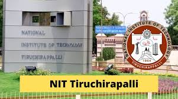

Is one of the India's premier academic and research technical institutions that has driven new ways of thinking since its inception. The institution offers Under Graduate Courses in ten branches and Post Graduate Courses in thirty one disciplines of Science, Engineering & Technology besides M.S.
What is NIT Trichy famous for?
NIT Trichy, also known as the National Institute of Technology, Tiruchirappalli, is one of the most prestigious Engineering colleges in India. It consistently ranks among the top Engineering colleges in the country and has a reputation for academic excellence and industry relevance.
Globally, NIT Trichy is ranked 1579 by the Center for World University Rankings (CWUR) in 2023, 781–790 by the QS World University Rankings (QS) in 2024, 801–1000 by the Times Higher Education World University Rankings (THE) in 2024, and 1413 by the U.S. News & World Report Best Global University Ranking (USNWR) in ...
What is the annual fees of NIT Trichy?
Tech at NIT Trichy ranges between INR 1.4 Lacs - INR 3.6 lakh. Further, the course fee includes other components such as an annual examination fee, one-time admission fee, alumni fee, etc...